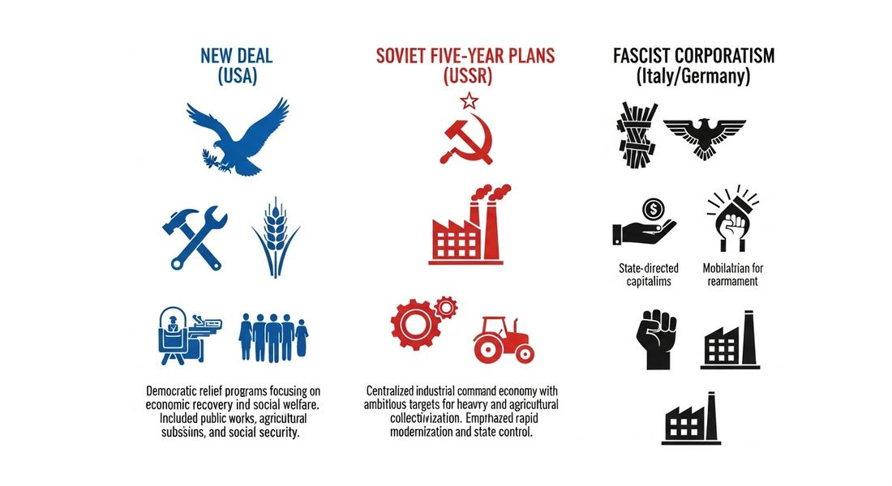
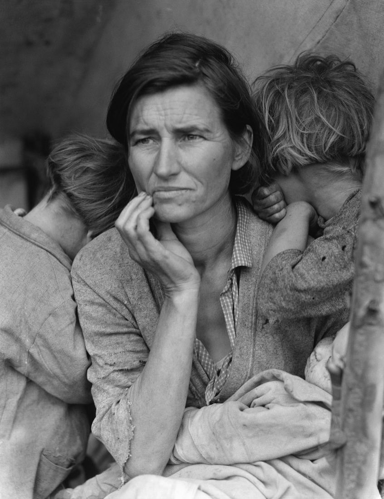

7.4 Economy in the Interwar Period
- LO-A: The Great Depression shattered faith in laissez-faire capitalism — The 1929 stock market crash triggered a global depression: U.S. GDP fell 30%, unemployment hit 25% in the U.S. and even higher in Germany. The economic catastrophe discredited the 19th-century idea that free markets self-correct. Across the world, governments moved to take a more active role in managing their economies — through different ideological frameworks. Three models of government economic intervention emerged — (1) Liberal democracy: the U.S. New Deal (FDR) used government spending, jobs programs, and financial regulation to stimulate recovery without abandoning capitalism. (2) Fascist corporatism: Italy and Germany's fascist states directed private industry through state-corporate partnerships, combined with rearmament spending. (3) Soviet communism: Stalin's Five Year Plans eliminated private ownership entirely, using state planning to industrialize rapidly — at enormous human cost. The Soviet Five Year Plans: rapid industrialization, repressive costs — Stalin launched the First Five Year Plan in 1928, collectivizing agriculture and directing all investment to heavy industry. The USSR transformed from an agricultural society to an industrial power in one generation. The cost was catastrophic: forced collectivization caused a famine (especially in Ukraine, the Holodomor, 1932–33) that killed 3–7 million people; millions more died in labor camps (the Gulag); political purges eliminated potential opposition. AP exam comparison: governments' responses to the Depression — The AP CED illustrative examples are: the New Deal (U.S.), fascist corporatist economy (Italy/Germany), and governments with strong popular support in Brazil and Mexico. Know that all three represent different responses to the same crisis — different ideologies, different methods, different costs — but all involved expanding the state's role in the economy beyond pre-Depression limits.
Try each question before revealing the answer.
1. Before the Great Depression, most Western governments followed "laissez-faire" economic policy — the idea that governments should not interfere in markets. Why did the Great Depression destroy confidence in this approach?
2. Stalin's Five Year Plans transformed the Soviet Union from an agricultural country to an industrial power in roughly one generation. Why did rapid industrialization require such repressive methods?
3. The New Deal, fascist corporatism, and Soviet planning all involved the government taking a more active role in the economy. What important difference distinguishes these three approaches?
4. The CED mentions "governments with strong popular support in Brazil and Mexico" as examples of economic intervention during the interwar period. Why might economic crisis specifically generate governments with strong popular support?
5. The Great Depression began in the United States (1929 stock market crash) but quickly became a global economic crisis. What does this suggest about the degree of global economic integration by 1929?
- Explain how different governments responded to economic crisis after 1900 — including the Soviet Five Year Plans, the New Deal, fascist corporatism, and governments with popular support in Brazil and Mexico
Tap a term for its definition.
-
Definition: The severe global economic downturn beginning with the 1929 U.S. stock market crash, producing mass unemployment and bank failures worldwide. Significance: Destroyed confidence in laissez-faire capitalism and created political conditions for the New Deal, fascism, and expansion of Soviet-style state planning.
-
Definition: Stalin's series of centrally planned economic programs that set production targets for all Soviet industries, beginning in 1928. Significance: Rapidly industrialized the USSR at the cost of millions of lives through forced collectivization, famine, and labor camp deaths; transformed a peasant economy into an industrial power.
-
Definition: Stalin's forced consolidation of individual peasant farms into collective farms (kolkhozy) controlled by the state. Significance: Generated the capital for industrial investment by extracting grain from agriculture; caused famine that killed millions, especially in Ukraine (Holodomor, 1932–33).
-
Definition: Franklin D. Roosevelt's program of government programs, relief, and financial regulation enacted 1933–1939 to address the Great Depression. Significance: The U.S. model of government economic intervention that preserved capitalism while using state spending and regulation to stabilize the economy and protect workers.
-
Definition: An authoritarian ultra-nationalist ideology emphasizing national unity, state power, anti-communism, and often racial hierarchy; emerged in Italy under Mussolini (1922) and Germany under Hitler (1933). Significance: Offered a "third way" between capitalism and communism; used corporatist economic policy and rearmament spending to address the Depression, while eliminating political freedom.
-
Definition: An economic system in which the state, businesses, and workers are organized into "corporations" under state direction, with private ownership preserved but state-managed. Significance: Italy and Germany's fascist economies used corporatist structures to direct investment toward rearmament and national economic goals without eliminating private property.
-
Definition: The economic theory (John Maynard Keynes, 1936) that government spending can stimulate economic recovery during recessions by increasing demand. Significance: Provided the intellectual justification for New Deal-style government intervention; became the dominant Western economic framework for most of the 20th century.
-
Definition: The Soviet-engineered famine of 1932–33 in Ukraine, in which 3–7 million people died as a result of forced collectivization and grain confiscation. Significance: The direct human cost of Stalin's rapid industrialization; recognized by many countries as a genocide; illustrates the AP CED's point that Five Year Plans had "negative repercussions for the population."
📉 The Great Depression: When the World Economy Collapsed
On October 29, 1929 — "Black Tuesday" — the U.S. stock market crashed, triggering the worst economic crisis in modern history. By 1933, U.S. GDP had fallen 30%, unemployment had reached 25%, and approximately 9,000 banks had failed, wiping out people's savings. But the Depression wasn't just an American crisis: through trade and finance, the collapse spread globally. Germany — which had been borrowing American money to pay WWI reparations — was especially hard hit; unemployment reached 30% by 1932. Latin American commodity exports collapsed. Industrial production in Britain and France fell sharply.
The Depression was more than an economic crisis — it was a political crisis. Governments that failed to respond effectively lost legitimacy. The economic catastrophe discredited laissez-faire capitalism — the pre-war consensus that governments should leave markets alone. New models of government economic intervention filled the vacuum. The AP CED identifies three distinct models: liberal democratic (the U.S. New Deal), fascist corporatism (Italy and Germany), and Soviet communist planning (the Five Year Plans). In Latin America, nationalist governments like those in Brazil and Mexico also expanded state economic roles.
🇺🇸 The New Deal: Saving Capitalism from Itself
When Franklin D. Roosevelt took office in March 1933, he immediately launched the New Deal — a series of programs designed to provide relief for the unemployed, recovery for the economy, and reform to prevent future crises. The New Deal didn't end the Depression (WWII ultimately did that), but it stabilized the economy, restored public confidence, and permanently changed the relationship between the U.S. government and its citizens.
Key New Deal programs included:
- Federal Emergency Relief Administration (FERA): Direct cash payments to unemployed families — the first federal welfare program.
- Civilian Conservation Corps (CCC): Employed young men in national parks and forests, planting trees, building trails, and fighting fires.
- Public Works Administration (PWA) and Works Progress Administration (WPA): Large-scale government construction projects (dams, highways, post offices, schools) creating millions of jobs.
- Social Security Act (1935): Created the Social Security pension system and unemployment insurance — programs that still exist today.
- Banking regulation: The Glass-Steagall Act separated commercial and investment banking, preventing the risky speculation that had contributed to the crash.
Crucially, the New Deal preserved capitalism — private property, private businesses, and market mechanisms remained. Roosevelt's goal was not to replace capitalism but to save it from its own excesses through government intervention. This is the key distinction from fascism and communism.
☭ Soviet Five Year Plans: Industrialization by Decree
While the West struggled with depression, the Soviet Union was attempting something unprecedented: industrializing a poor agricultural country through central state planning at breakneck speed. In 1928, Joseph Stalin launched the First Five Year Plan — a comprehensive blueprint for transforming the Soviet economy, setting specific production targets for steel, coal, electricity, machinery, and other industries.
The results in industrial terms were remarkable. By the late 1930s, the USSR had built massive steel mills (Magnitogorsk produced as much steel as the entire pre-revolutionary Russian Empire), hydroelectric dams (Dnieper Dam was the largest in the world), and a modern military-industrial complex. The Soviet Union industrialized in a decade what had taken Western countries half a century.
The human cost was catastrophic. Collectivization — forcing peasants onto state-run collective farms — met massive resistance from peasants who burned crops and slaughtered livestock rather than surrender them to the state. The resulting disruption of agriculture, combined with the state's continued extraction of grain for export, produced the Holodomor famine of 1932–33, which killed an estimated 3–7 million Ukrainians. Millions more were sent to the Gulag (forced labor camps) for resisting collectivization or failing to meet production quotas. The AP CED notes directly that Five Year Plans were "often implementing repressive policies, with negative repercussions for the population."

Three models of government economic intervention emerged from the crises of the interwar period: liberal democratic (New Deal), fascist corporatist (Italy/Germany), and Soviet communist (Five Year Plans). All expanded the state's economic role — but with very different political systems and human consequences. AI-generated illustration (Google Gemini, 2025), commercially licensed.

"Migrant Mother" — Florence Owens Thompson with her children at a California farm labor camp, 1936. Photo: Dorothea Lange, Farm Security Administration. Public domain, Wikimedia Commons.
⚡ Fascist Corporatism: The "Third Way"
Fascist leaders in Italy and Germany presented their economic systems as a "third way" between capitalism and communism: private property would be preserved, but the state would direct the economy through state-industry partnerships called corporatism. Workers' unions and employers' associations were reorganized into state-controlled "corporations" that would set wages and prices under government guidance.
In practice, fascist economic policy relied heavily on rearmament spending. Germany under Hitler invested massively in military production — tanks, planes, ships, and munitions. This government spending created jobs and drove the German recovery, reducing unemployment from 30% in 1932 to under 5% by 1938. But it was military Keynesianism: the spending was building weapons, not schools or hospitals, and it was financed by deficit spending that would ultimately require territorial conquest and plunder to sustain. The economic "miracle" of Nazi recovery was essentially preparation for war.
🌎 Brazil and Mexico: Nationalist Alternatives
The interwar economic crisis also reshaped Latin American politics. In both Brazil and Mexico, governments with strong popular support expanded state economic roles in nationalist directions. Getúlio Vargas in Brazil (1930–1945) nationalized the steel industry, protected Brazilian manufacturers through tariffs, and built a labor movement loyal to his government. Lázaro Cárdenas in Mexico (1934–1940) — implementing the promises of the 1910 Revolution — nationalized foreign oil companies in 1938, creating PEMEX (which still exists), distributed land to peasants, and built a governing coalition of workers and peasants. Both leaders combined economic nationalism, state-directed industrialization, and popular mobilization without adopting fascism or communism — a specifically Latin American model of development.
These videos will help you review Economy in the Interwar Period and solidify key concepts before your exam.
- the failure of laissez-faire economic policy to prevent or address the Great Depression's mass unemployment and bank failures
- the spread of Marxist ideology from the Soviet Union to Western democratic nations
- pressure from organized labor movements that had been strengthened by wartime mobilization
- international agreements requiring all League of Nations members to adopt stimulus spending
- the Soviet Union's defeat in the Russo-Japanese War, which discredited the industrialization program
- the mass famine caused by forced collectivization, particularly in Ukraine, which killed millions of people
- the collapse of Soviet industrial production due to inefficient central planning
- widespread strikes by Soviet workers who rejected the collectivization of industrial factories
- only the New Deal reduced unemployment; the other two failed economically
- only the New Deal used deficit spending; the others relied on taxation
- the New Deal preserved capitalism and democracy, while fascism maintained capitalism with authoritarianism, and Soviet planning eliminated capitalism entirely
- the New Deal addressed the Depression through military rearmament, while the others used civilian job programs
- Soviet-style communist revolution spreading to Latin America
- the New Deal model of government stimulus being adapted for developing economies
- fascist corporatism applied to the Latin American context
- economic nationalism, in which a state asserted control over strategic resources previously owned by foreign companies
- Massive government spending on military rearmament created jobs in defense industries and related sectors
- The Nazi regime's removal of Jewish workers from the labor force freed up jobs for unemployed Germans
- Germany's fascist government successfully negotiated debt relief from the U.S. and Britain, providing capital for economic investment
- Germany's corporatist economic system reorganized businesses to increase efficiency, raising private sector employment